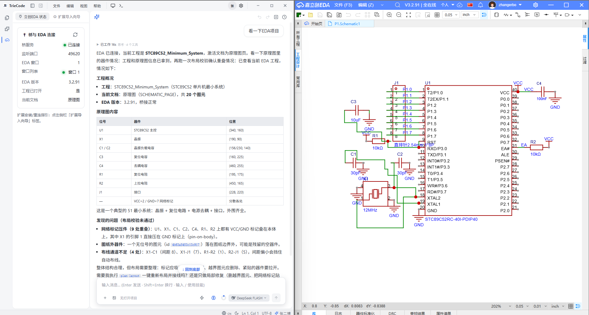

TrieCode EDA 桥
立创EDA（专业版）与 TrieCode AI 之间的本地 WebSocket 桥接 · 仅监听 127.0.0.1
v1.0.0
Apache-2.0
① 立创EDA 专业版
导入 .eext 后常驻扩展进程
执行任意 EDA API（原理图 / PCB / 器件库）
→
② WebSocket 本地桥
ws://127.0.0.1:49620–49629
token 鉴权 · Origin 校验 · 心跳保活 · 指数退避重连
→
③ TrieCode AI
安装「立创EDA」插件
AI 经 41 个结构化工具读写工程（免手写 API）
协议消息：
handshake
→
register
→
execute / result / error
·
status
·
ping / pong
·
shutdown
实际运行 · 左：TrieCode AI | 右：嘉立创EDA 专业版
真实截图

TrieCode AI
调用
easyeda_*
工具
|
经本地桥
ws://127.0.0.1:49625
|
嘉立创EDA
顶部菜单「TrieCode EDA 桥」扩展执行
实际运行演示
|
github.com/triecode-dev/triecode-plugins
|
Apache-2.0 · fork from JLCEDA/run-api-gateway